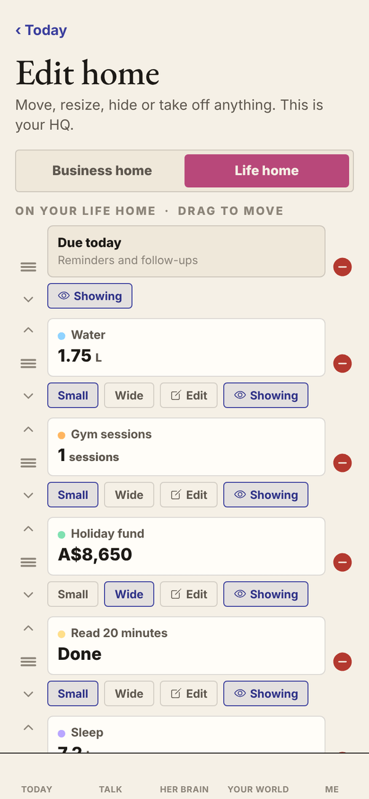
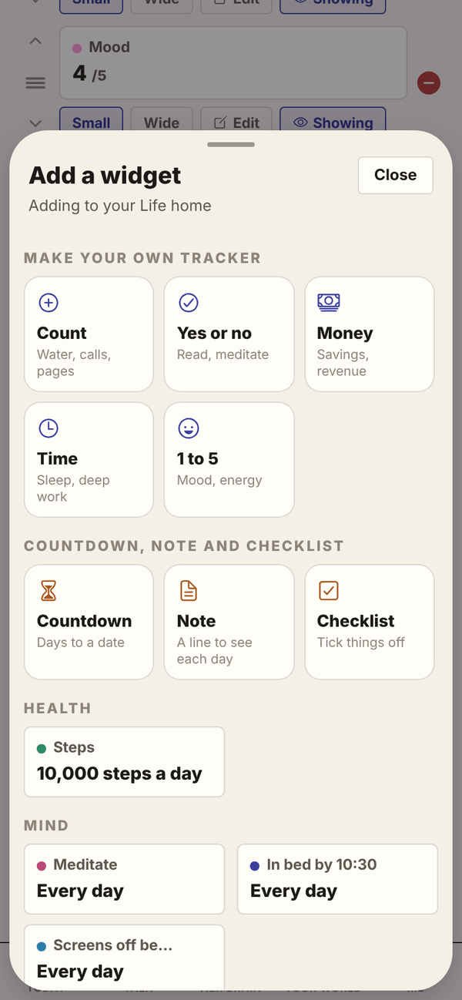

Tali HQ guide
Your HQ: blocks and trackers
Build your own home on Today. Add blocks, make trackers for anything you want to keep count of, move and resize them, and start from a template.
Everything under YOUR HQ on Today is yours to arrange. It's a set of blocks: the parts of Tali HQ you use most (Due today, Needs you, Money, Goals), trackers for anything you want to keep count of (water, cold calls, savings, pages read), and small extras like a countdown or a note.
If you run a business, you have two homes: a Business home and a Life home. Each side of Today shows its own. If you have more than one business, each business has its own home too.

Edit your home#
Tap Edit home (top right of YOUR HQ) to change anything. You can also get there from Me.

- Move a block: drag it by the handle on the left, or use the arrows.
- Small or Wide: trackers, countdowns and notes can sit half width or full width.
- Edit: change a tracker or an extra.
- Showing / Hidden: hide a block without taking it off. Its history stays.
- Take it off: tap the red minus. A tracker's history is kept.
If you run a business, the switch at the top picks which home you are editing: Business home or Life home. Changes save as you go. You'll see Saved once they have.
Add a block#
Tap + Add a widget. The list shows what you can add to the home you are on.

- Make your own tracker: Count, Yes or no, Money, Time, or 1 to 5. See below.
- Countdown, Note and Checklist: days to a date, a line you want to see each day, or a list to tick off. Checklist comes with the paid plans.
- Ready-made trackers: water, steps, sleep, gym sessions, meditate, mood, in bed by 10:30, savings, cold calls and more, grouped by Health, Mind, Money, People and Work.
- From your HQ: the built-in blocks, like Needs you, Due today, Morning brief, Money, Pipeline, Jobs on, Calendar, Goals, This week, Habits, People, Journal and Sleep sounds.
- Business blocks Business: Team, Leads, Cash flow, Bookings today, Website visits, Quote win rate and Customer happiness.
- Start from a template: a whole set of blocks for a goal, like Get fit, Save money, Grow the business, Calm mind, Sleep better, Pay off a debt, Get organised or Run the jobs. Tap one to see a preview first.
When you start from a template, you can add it to your home or replace your home with it. Replacing takes your current blocks off, but your trackers and their history are kept.
Ask Tali to build it#
Tap Ask Tali to build it, or just tell her in Talk: "Track my cold calls, 20 a week". She makes the tracker and puts it on your home, with Edit and Undo on her reply. It counts the same as a chat message.
You can log to a tracker in Talk too: "I drank another litre of water".
Trackers#
A tracker keeps count of one thing, by the day, the week, the month or in total.
Make a tracker#
- Tap + Add a widget, then pick a kind under Make your own tracker.
- Give it a name under What are you tracking?
- Set a Target and how often: A day, A week, A month or In total. Add a unit if it helps, like L, calls or pages.
- Under One tap of + adds, put how much one tap adds, or leave it empty to type an amount each time.
- Pick How it looks (Ring, Bar, Number, Streak or Chart) and Small or Wide.
- Tap Add to my home.
More options:
- Count down: for a debt or anything you are getting down to a number. Each log takes off what you paid.
- One rest day a week: a planned day off doesn't break your streak.
- Tali keeps me on track Paid: a nudge shows on your home when you fall behind a steady pace, like "Water is behind: 1.25 L to go today". On Pro, Tali writes the check-in in her own words with your morning brief.
- Where it logs from Pro: a Money or Count tracker can fill itself in from invoices paid, your spending, quotes sent, jobs done or bookings. You can still add to it by hand.
- Team tracker Business: everyone on your team logs to it. You see the total and each person's share.
Log to a tracker#
- Tap + to add one step, like a quarter of a litre of water or one cold call.
- Hold + to type an amount, pick a past day (Today, Yesterday or 2 days ago) and add a note. Then tap Log it.
- Yes or no trackers have a tick instead. Tap it to tick today off, and again to untick.
- 1 to 5 trackers ask "How was it, 1 to 5?" Tap a number.
A tracker's page#
Tap a tracker on your home to open its page.
- A chart of this week by day, the last 30 days, the last 12 months, or by month since you started.
- Streaks and records Paid: your current and best streak, best day and best week, your average, and your pace towards the target.
- Why it changed: on Pro, Tali writes a read on it each Monday with your brief. On Tali HQ you can tap Ask why now for 1 credit.
- Your entries: tap one to change the amount or note, or remove it. Export CSV saves every entry.
- This tracker: Edit tracker, Archive (takes it off your home, the history is kept), or Delete (removes the tracker and every entry, and can't be undone). Both ask you to tap again to confirm.
Share your layout Tali HQ#
On Edit home, tap Share my layout. Name it, add a line about it, and get a link to send to a friend, a teammate or your followers. They can copy it into their own HQ.
Show my numbers is off to start, so they see the layout and targets only. Turn it on and they also see where you were at when you last updated the link. You can switch the link off any time, and nobody can open it after that.
Team layout Business#
On a Business plan, Team layout on Edit home sets the home your team starts from. Push it to every seat. Blocks you pin stay on their homes, and suggested ones they can take off. What a teammate can see is still set by their seat, so a block with money in it stays hidden from someone who can't see money. See Business tools.
What each plan fits#
| Free | Paid plans | |
|---|---|---|
| Blocks on a home | 6 | No limit |
| Your own trackers on a home | 3 | No limit |
| Tracker looks | Number and Bar | Ring, Bar, Number, Streak and Chart |
| Targets | A day or a week | A day, a week, a month or in total |
| History you can see | 7 days | All of it |
| Countdown and Note | Yes | Yes |
| Checklist, Tali keeps me on track, sharing | No | Yes |
On Free, anything past the limit waits under Didn't fit on Free in Edit home, with its history, and comes back when there's room or when you upgrade. See Plans, credits and billing.
Questions#
I've never touched Edit home. What's on my home?
The same blocks Today has always had, in the same order. On the Life side that's an idea from night school, Due today, Habits, People, Money, Food and training, Journal and Sleep sounds (Free has fewer). On the Business side it's Money, Pipeline, an idea from night school, Needs you, Due today, This week and Goals.
I took a tracker off my home. Is it gone?
No. It shows under Your trackers not on this home in Edit home. Tap it to put it back. Only Delete on the tracker's page removes it for good.
Can one tracker be on both homes?
Yes. When you make or edit it, pick Both under Which home?
Why does a block say it's not on my plan?
Business blocks come with the Business plans. If you change plans, they wait in Edit home in case you go back.
Does logging to a tracker use credits?
No. Tapping + or logging an amount is free. Asking Tali in Talk counts as a chat message, and Ask why now uses 1 credit.